Глава 17:
Descend Beyond


Феликс Рихтер родился в семье Яноша и Урсулы Рихтер в Кобурге, Германия. Рихтеры были врачами, имели обширные связи и пользовались огромным уважением. Его родители, члены древнего общества, почти не жили в поместье Рихтеров, постоянно пропадая на медицинских конференциях или оказывая гуманитарную помощь по всему миру. Путешествия познакомили юного Феликса с новыми культурами, языками и архитектурой, которую ему доселе не приходилось видеть. Он не был уверен, когда именно началось его увлечение зодчеством, но вскоре оно накрыло его с головой. Феликс знал, что, несмотря на наследие семьи, сам он однажды будет проектировать здания, которые вдохновят весь мир. К 23 годам он считался архитектурным гением, получив медаль Швейцарского архитектурного фонда и Национальную премию Германии в сфере дизайна. Но, несмотря на такую успешность, Феликс не мог отделаться от чувства, что главную роль в этом сыграли удача и связи, а не труд и талант.
Чтобы понять состояние человека, следует возвыситься над его положением. Таково было жизненное кредо Тальбота Граймса - амбициозного шотландского химика, достигшего невиданных успехов. В детстве его - умного, харизматичного, не боящегося перечить старшим - любили сверстники. Несмотря на признание, он яростно оберегал свою самостоятельность и подолгу оставался в одиночестве, бродя по бескрайним полям вокруг родного городка. Невинное детское любопытство едва не стоило ему жизни после экспериментов с ядовитой наперстянкой. Тальбот оказался прикован к постели на несколько дней, обильно потея и потеряв всяческий аппетит. Когда мальчик наконец поправился, его охватил не страх, а неподдельный интерес. Было что-то магическое в том, как один-единственный цветок настолько сильно повлиял на его организм.


Особая способность:
Особая способность: "Ускорение"
Нажмите кнопку силы, чтобы ускоренно побежать вперед. При этом расходуется жетон ускорения. При ускорении Мор не сможет атаковать.
Ускорьтесь и бегите к стене или препятствию, чтобы столкнуться с ним. Если при ускорении не удастся задеть стену или препятствие, или если у Мора закончатся жетоны ускорения, он впадет в кратковременное состояние истощения и начнет восстанавливать жетоны.
Особая атака: Смертельное ускорение
После ускорения нажмите кнопку силы, чтобы провести "Смертельное ускорение". При этом расходуется жетон ускорения. "Смертельное ускорение" работает также, как и обычное ускорение, но при нем Мор может атаковать с помощью кнопки атаки.
Персонажи
Феликс Рихтер
Читать дальше...
Личные навыки:


Мор
Читать дальше...


Особая способность:
"Моровая скверна"
Нажмите кнопку силы, чтобы ускоренно побежать вперед. При этом расходуется жетон ускорения. При ускорении Мор не сможет атаковать.
Ускорьтесь и бегите к стене или препятствию, чтобы столкнуться с ним. Если при ускорении не удастся задеть стену или препятствие, или если у Мора закончатся жетоны ускорения, он впадет в кратковременное состояние истощения и начнет восстанавливать жетоны.
Особая атака: Смертельное ускорение
После ускорения нажмите кнопку силы, чтобы провести "Смертельное ускорение". При этом расходуется жетон ускорения. "Смертельное ускорение" работает также, как и обычное ускорение, но при нем Мор может атаковать с помощью кнопки атаки.
Dead By Daylight
Контакты:
Помощь:
предложения отправлят сюда
@mail: dbd-help@mail.ru
D
E
A
D
E
A
D
B
Y
Y
D
A
Y
L
I
G
H
T
A
Y
L
I
G
H
T